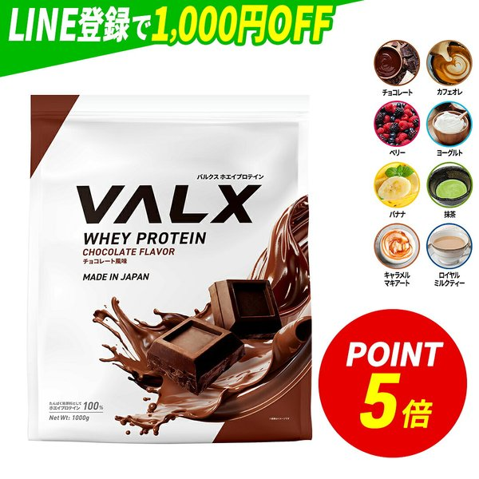
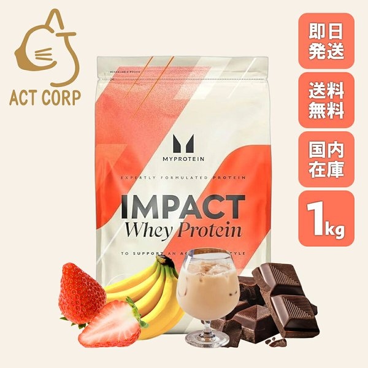
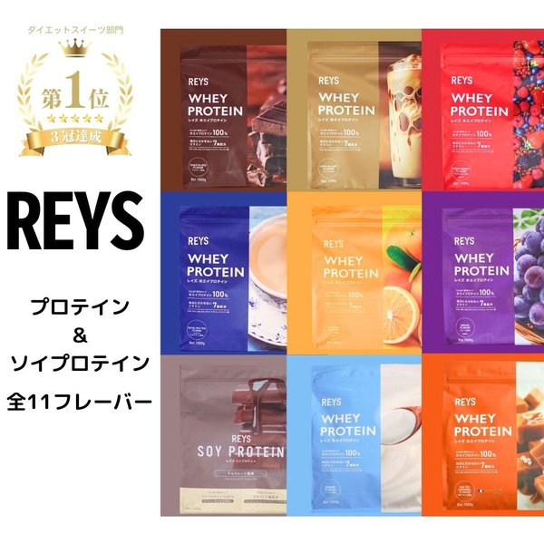
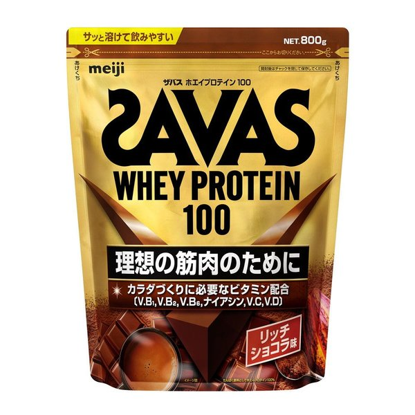
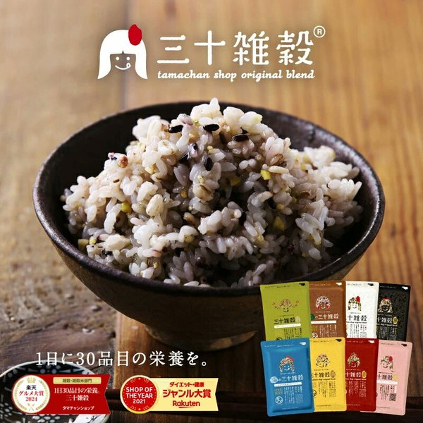
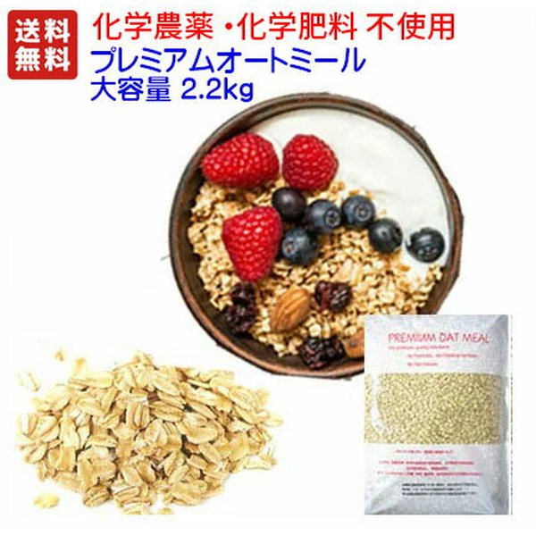
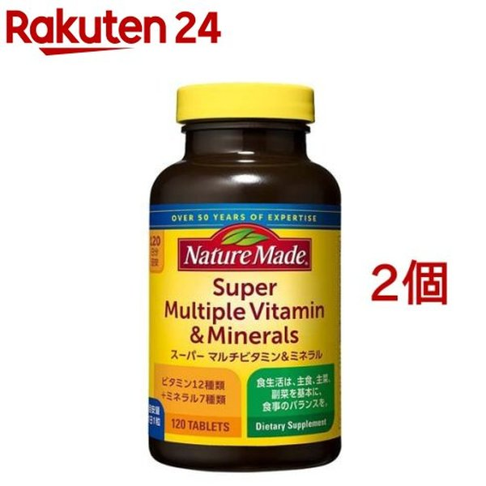
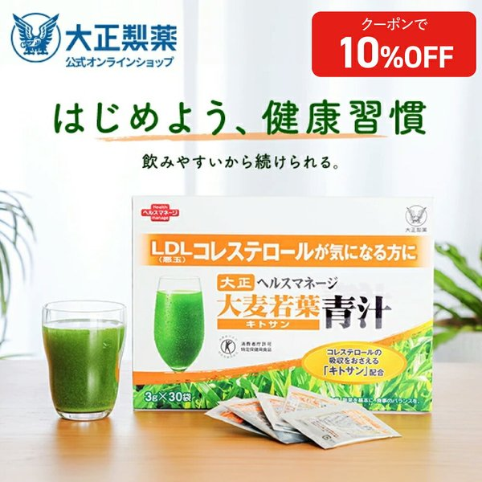
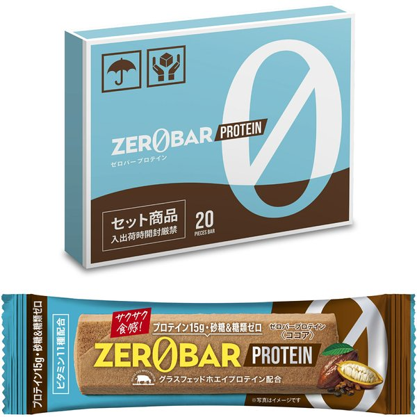

【2026年】忙しい平日の栄養と体調管理に！プロテイン・健康サポート食品10選
平日の食事は、昼がコンビニ、夜が遅い、という日が続きがちです。たんぱく質と野菜が足りないまま一週間が過ぎると、疲れが抜けにくくなります。そこで効くのが、手をかけずに栄養を足せる食品とサプリです。
選ぶ軸は、続けられる味か、1食あたりのたんぱく質量、そして置き場所を取らないかの3つです。プロテインは、水でも溶けて味が飲みやすいものを選ぶと習慣になります。たんぱく質は1食15〜20gを目安に、朝と運動後に分けて摂ると体に負担がかかりません。雑穀米やオートミールは、主食を置き換えるだけで食物繊維を足せます。サプリは、マルチビタミンのように1日2粒で済むものを選び、朝食の皿の横に置いておくと飲み忘れません。間食が甘いものに偏る人は、プロテインバーを職場の引き出しに入れておくと、昼食までの空腹が変わります。
本記事では、楽天市場で人気・高評価のプロテイン・健康サポート食品10選を、実売価格とレビュー評価つきで写真付き紹介します。
- おすすめ10選 スペック・特徴比較表
- BEST 1｜タンパクオトメ 美容専門プロテイン（ホエイ＆ソイW配合・25種の美容成分）
- BEST 2｜VALX ホエイプロテイン WPC 1kg（8種フレーバー・国内生産）
- BEST 3｜マイプロテイン Impact ホエイプロテイン 1kg（全35種類のフレーバー）
- BEST 4｜REYS ホエイプロテイン 1kg（山澤礼明監修・ビタミン7種配合）
- BEST 5｜ザバス ホエイプロテイン100 リッチショコラ味 800g
- BEST 6｜国産雑穀米「三十雑穀」1kg（30種類の雑穀ブレンド）
- BEST 7｜プレミアム オートミール 2.2kg（化学農薬・化学肥料不使用栽培）
- BEST 8｜ネイチャーメイド スーパーマルチビタミン＆ミネラル 120粒×2本セット
- BEST 9｜ヘルスマネージ 大麦若葉の青汁 30袋（特定保健用食品）
- BEST 10｜ZEROBAR プロテインバー 20本入り（ベイクドクッキータイプ）
- 【読者負担0円】買わなくても得する無料サービス
- まとめ：プロテイン・健康サポート食品10選の選び方
| 順位 | 商品名 | ブランド | 最大の特徴・おすすめ理由 | 総合評価 |
|---|---|---|---|---|
| BEST 1 | タンパクオトメ 美容専門プロテイン（ホエイ＆ソイW配合・25種の美容成分） | タマチャンショップ（タンパクオトメ） | ホエイ＆ソイのWプロテイン | 4.31 |
| BEST 2 | VALX ホエイプロテイン WPC 1kg（8種フレーバー・国内生産） | VALX | 山本義徳監修・国内生産 | 4.68 |
| BEST 3 | マイプロテイン Impact ホエイプロテイン 1kg（全35種類のフレーバー） | マイプロテイン（Myprotein） | 1kgで約40食分 | 4.65 |
| BEST 4 | REYS ホエイプロテイン 1kg（山澤礼明監修・ビタミン7種配合） | REYS（レイズ） | ビタミン7種配合 | 4.60 |
| BEST 5 | ザバス ホエイプロテイン100 リッチショコラ味 800g | 明治（ザバス） | 1食でたんぱく質15g | 4.66 |
| BEST 6 | 国産雑穀米「三十雑穀」1kg（30種類の雑穀ブレンド） | タマチャンショップ | 国産30種類の雑穀ブレンド | 4.50 |
| BEST 7 | プレミアム オートミール 2.2kg（化学農薬・化学肥料不使用栽培） | プレミアム オートミール | 2.2kgの大容量 | 4.71 |
| BEST 8 | ネイチャーメイド スーパーマルチビタミン＆ミネラル 120粒×2本セット | 大塚製薬（ネイチャーメイド） | 12種のビタミン＋7種のミネラル | 4.55 |
| BEST 9 | ヘルスマネージ 大麦若葉の青汁 30袋（特定保健用食品） | 大正製薬 | 特定保健用食品（トクホ） | 4.42 |
| BEST 10 | ZEROBAR プロテインバー 20本入り（ベイクドクッキータイプ） | ZEROBAR | 20本入りで1本140円ほど | 4.48 |
タンパクオトメ 美容専門プロテイン（ホエイ＆ソイW配合・25種の美容成分）

女性向けの美容プロテイン、タンパクオトメ。ホエイとソイのWプロテインに、25種類の美容成分を配合しています。高たんぱく低糖質の設計で、置き換えダイエットや間食の代わりにも使えます。味はココアや抹茶、フルーツ系などがあり、粉っぽさが苦手な人でも飲み続けやすい味です。シェイカーが付いたセットも選べます。楽天市場での実売価格は約3,480円（2026年11月時点）。
- ホエイ＆ソイのWプロテイン
- 25種の美容成分を配合
- 高たんぱく低糖質
- 味の種類が多いぶん、好みに合うか1袋で試してから続ける
VALX ホエイプロテイン WPC 1kg（8種フレーバー・国内生産）

山本義徳監修のVALX ホエイプロテインWPC 1kg。国内生産で、8種類のフレーバーから選べます。WPC（濃縮ホエイ）は吸収が速く、トレーニング後のたんぱく質補給に向くタイプです。溶けやすさに配慮した粉で、水でもダマになりにくいのが特徴。味の種類が多いので、家族で好みが分かれても揃えやすいです。楽天市場での実売価格は約8,980円（2026年11月時点）。
- 山本義徳監修・国内生産
- 8種から選べるフレーバー
- 水でも溶けやすいWPC
- 1kgは約1ヶ月分なので、飲む量が多い人は2kgを選ぶ
マイプロテイン Impact ホエイプロテイン 1kg（全35種類のフレーバー）

イギリス発のマイプロテインの定番、Impact ホエイプロテイン1kg。1食あたり約21gのたんぱく質が摂れ、フレーバーは35種類以上あるので飽きずに続けられます。1kgで約40食分。味を選ぶときに迷ったら、まずはチョコレートやバニラの定番から試すと失敗しません。専用の計量スプーンが付いてきます。楽天市場での実売価格は約7,480円（2026年11月時点）。
- 1kgで約40食分
- 35種類以上のフレーバー
- 1食あたり約21gのたんぱく質
- 海外発送の商品が多く、届くまでに日数がかかる場合がある
REYS ホエイプロテイン 1kg（山澤礼明監修・ビタミン7種配合）

山澤礼明監修のREYS ホエイプロテイン1kg。ビタミン7種を配合し、カフェオレやミルクティー、塩キャラメルなど飲みやすい系統の味が揃っています。国内製造で、1kgは約33食分。甘さのある味が多いので、水より牛乳で割るとカフェドリンクのように飲めます。ソイプロテインのシリーズもあるので、乳製品が重い人はそちらを選べます。楽天市場での実売価格は約3,950円（2026年11月時点）。
- ビタミン7種配合
- 飲みやすい味が揃う
- 国内製造・約33食分
- 甘さのある味が中心なので、甘くない味を好む人はプレーンを選ぶ
ザバス ホエイプロテイン100 リッチショコラ味 800g

明治のザバス ホエイプロテイン100、リッチショコラ味の800g。1食分でたんぱく質15gを摂れる設計で、運動後の1杯や、朝食が軽くなった日の補助に向いています。水にも溶けやすく、シェイカーに水と粉を入れて振るだけで飲めます。チョコレート味は牛乳で割ると飲みやすく、続けやすい味です。楽天市場での実売価格は約5,481円（2026年11月時点）。
- 1食でたんぱく質15g
- 水でも溶けやすい定番
- チョコ味で毎日続けやすい
- 800gは約1ヶ月分なので、続けるなら大容量の追加を検討する
国産雑穀米「三十雑穀」1kg（30種類の雑穀ブレンド）

タマチャンショップの国産雑穀米「三十雑穀」。30種類の国産雑穀をブレンドしたもので、白米に混ぜて炊くだけで、ふだんのご飯に雑穀の栄養を足せます。もち麦や黒米などが入り、炊き上がりはプチプチとした食感に。1,000円で試せる量なので、雑穀米を初めて取り入れる家庭にもちょうどいいです。楽天市場での実売価格は約1,000円（2026年11月時点）。
- 国産30種類の雑穀ブレンド
- 白米に混ぜて炊くだけ
- 1,000円で試しやすい
- 白米に混ぜる手間があるので、まとめて炊いて冷凍する
プレミアム オートミール 2.2kg（化学農薬・化学肥料不使用栽培）

化学農薬・化学肥料を使わずに栽培されたオーツ麦のオートミールを、2.2kgの大容量で。1日50g食べるなら約1ヶ月半の朝食になり、毎朝オートミールを食べる人ほど割安です。レンジで加熱するだけでも食べられますが、前の晩に水や牛乳に浸けておけば、朝は混ぜるだけで済みます。ヨーグルトやフルーツを足すと、たんぱく質と食物繊維を一度に摂れます。楽天市場での実売価格は約1,850円（2026年11月時点）。
- 2.2kgの大容量
- 化学農薬・化学肥料不使用
- 朝食の時短に向く
- 2.2kgは袋が大きいので、密閉できる容器に移すと扱いやすい
ネイチャーメイド スーパーマルチビタミン＆ミネラル 120粒×2本セット

大塚製薬のネイチャーメイド スーパーマルチビタミン＆ミネラルを、120粒×2本セットで。12種類のビタミンと7種類のミネラルをまとめて摂れるサプリで、1日2粒が目安です。食事が偏りがちな平日の補助として、朝食後に飲む習慣にすると忘れにくくなります。2本あるので、1本を職場に置いておく使い方もできます。楽天市場での実売価格は約4,560円（2026年11月時点）。
- 12種のビタミン＋7種のミネラル
- 1日2粒の手軽さ
- 120粒×2本セット
- サプリは食事の代わりにならないので、食事と併用する
ヘルスマネージ 大麦若葉の青汁 30袋（特定保健用食品）

大正製薬のヘルスマネージ 大麦若葉の青汁、30袋入り。キトサンと抹茶を配合した特定保健用食品で、コレステロールの吸収を抑える働きが報告されています。1袋を水や牛乳に溶かすだけなので、朝の習慣に組み込みやすい。粉っぽさが少なく、抹茶の風味で飲みやすいタイプです。製薬会社の製品なので、成分表示を確認しながら続けられます。楽天市場での実売価格は約4,104円（2026年11月時点）。
- 特定保健用食品（トクホ）
- キトサン・抹茶入りで飲みやすい
- 30袋入りで約1ヶ月分
- 特定保健用食品のため、摂取量は表示された目安を守る
ZEROBAR プロテインバー 20本入り（ベイクドクッキータイプ）

グラスフェッドホエイプロテインを使ったZEROBARのプロテインバー、20本入り。1本あたり140円ほどで、砂糖と糖類を使わずにビタミン11種を配合しています。ベイクドクッキータイプなので硬すぎず、間食や仕事の合間の補給に向いています。20本あると、1日1本で3週間分。職場の引き出しに入れておけば、昼食までの空腹をしのげます。楽天市場での実売価格は約2,800円（2026年11月時点）。
- 20本入りで1本140円ほど
- 砂糖・糖類不使用
- ビタミン11種配合
- 1本あたりのたんぱく質量はプロテインほど多くない
この記事の商品を買う前に、まずは無料で得する選択肢をチェック。どれも登録・利用は0円で、無料期間中に解約すれば料金はかかりません。読みたい雑誌がある人、ポイントを貯めたい人、アンケートなら気軽という人、それぞれに合うものを選べます。
初回31日無料・無料期間中に解約すれば0円 → 楽天ポイントモール｜登録無料で毎日ポイ活
買い物なしでもポイントが貯まる無料サービス → 楽天インサイト｜アンケートに答えてポイント
登録無料・すきま時間のアンケートで貯まる → 楽天カード｜年会費永年無料
新規発行・年会費ずっと0円 →
4つのサービスの違いと使い分けは「出費0円で得する！買わずにポイントが貯まる無料サービス厳選4選」でまとめています。
💡 まとめ：プロテイン・健康サポート食品10選の選び方
平日の栄養は、完璧な食事を目指すより、足りないものを1つ足すほうが続きます。まずプロテインを1杯、朝か運動後に足す。主食は週に数回、雑穀米やオートミールに置き換える。野菜が足りない日は青汁で補い、ビタミンとミネラルはマルチビタミンで底上げする。間食はプロテインバーに替える。この5つを全部やる必要はなく、自分の抜けやすいところから1つ選ぶのがコツです。プロテインは味の好みが分かれるので、まず1kgで試し、飲み切れたら大容量に切り替えてください。サプリは飲みすぎず、表示された1日の目安量を守って続けましょう。
楽天市場では「5と0のつく日」や「お買い物マラソン」などのキャンペーンに合わせて購入すると、ポイント還元が最大化してお得に手に入ります。ぜひチェックしてみてくださいね。